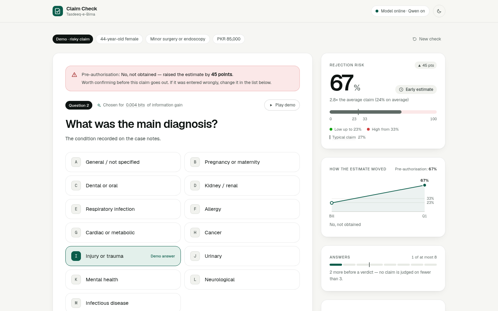
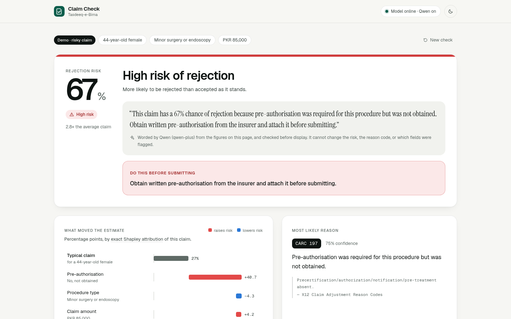

Bano Qabil AI Hackathon
Claim Check
Catch the insurance-claim rejection
before the claim is sent.
Mirza Ahsan Baig · Safee AkmalTasdeeq-e-Bima
Catch the insurance-claim rejection
before the claim is sent.
Mirza Ahsan Baig · Safee AkmalTasdeeq-e-Bima

On ACA marketplace plans, insurers denied about 1 in 5 in-network claims in 2023, and fewer than 1% of denials were appealed.3
of health-claim value actually paid in FY 2023-24. ₹26,000 crore disallowed or repudiated.4
payment waits for some hospitals. The programme blamed incomplete documents; 94% of hospitals asked for e-claims.5
rural private hospitals stopped accepting the new national cover; 89% called the claims portal non-functional.6
Patient age and sex, procedure, amount
Only the ones that matter for this claim
Chance of rejection, the cause, the fix

How it could earn (proposed): per-clinic subscription · licence to TPAs for their provider panel · integration with national e-claims schemes

Computes the chance of rejection, the verdict and the likely reason
Check pre-auth, deadlines, tariffs and coverage — no AI involved
Writes one plain sentence from the finished result
362 held-out simulated claims, used once. Verdict thresholds were fitted on a separate split, not chosen by hand.
We’re looking for a partner clinic or TPA to pilot with real claims.
Mirza Ahsan Baig · Safee AkmalThank you

Our own results: models/metadata.json and docs/model-card.md in the project repository (3,612 simulated claims, test split of 362).